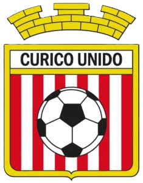

CU
ESTADIO LA GRANJA
Curicó Unido · Penales
LISTO PARA JUGAR

LOCAL
CURICÓ UNIDO
TANDA DE PENALES
0 - 0
PARTIDO RÁPIDO
VISITA
AMARGOS FC
Arrastra para dar efecto y suelta para patear · ESPACIO dispara sin efecto
⚽
Cargando...
APUNTA · CARGA · DISPARA